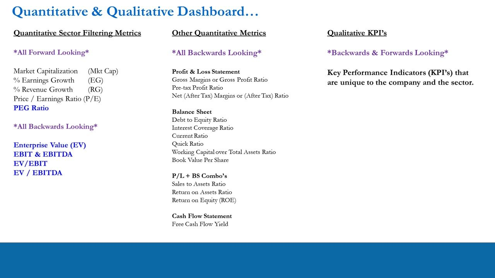
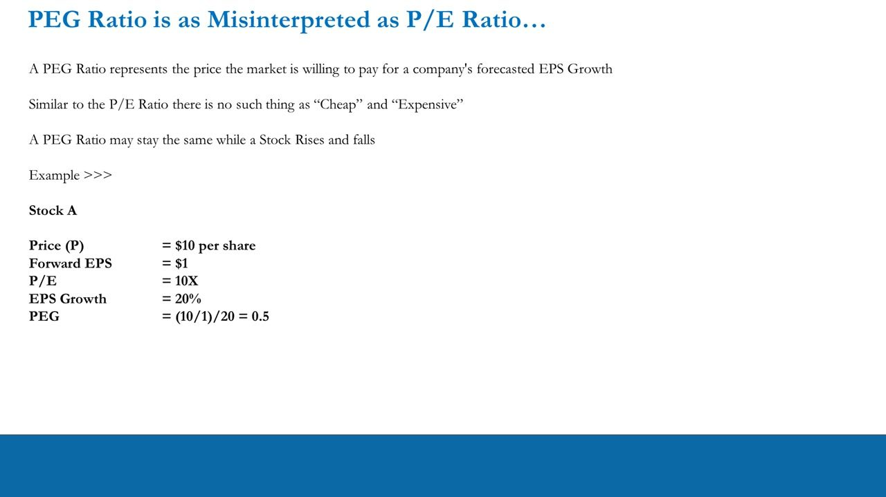
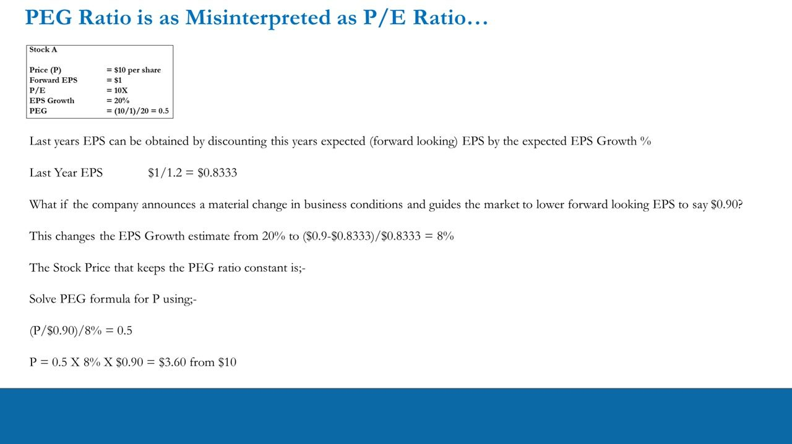
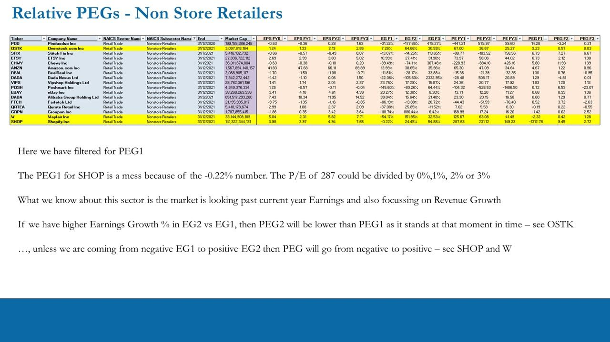
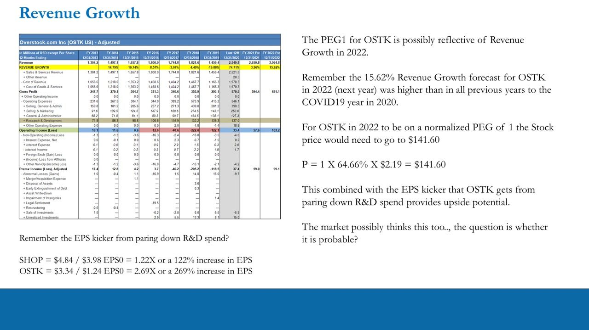
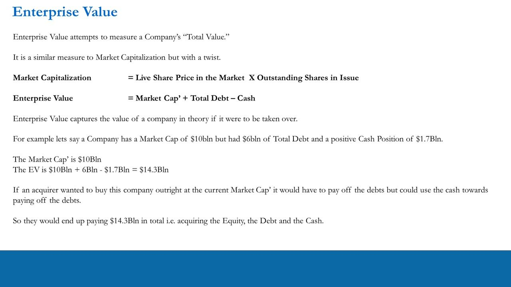
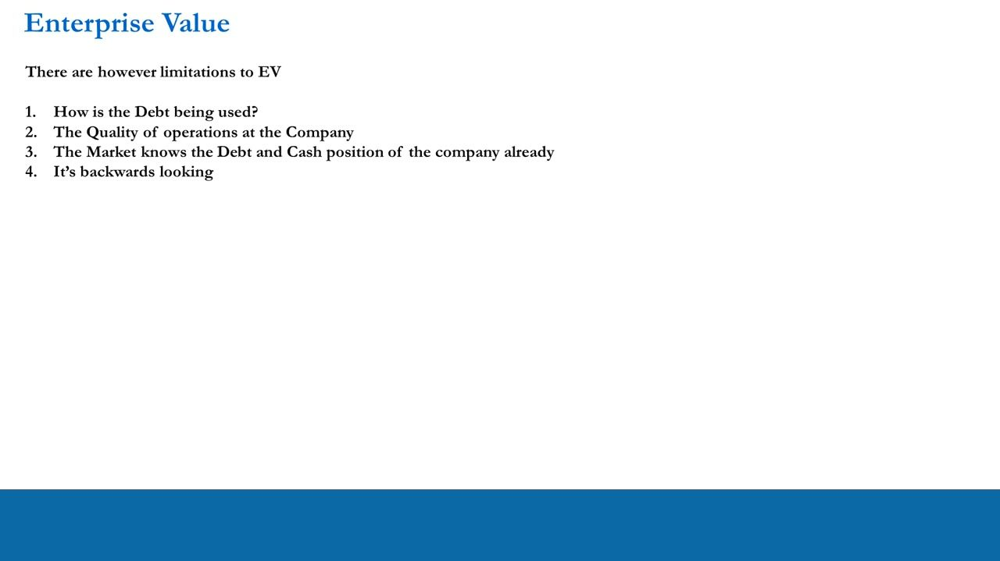
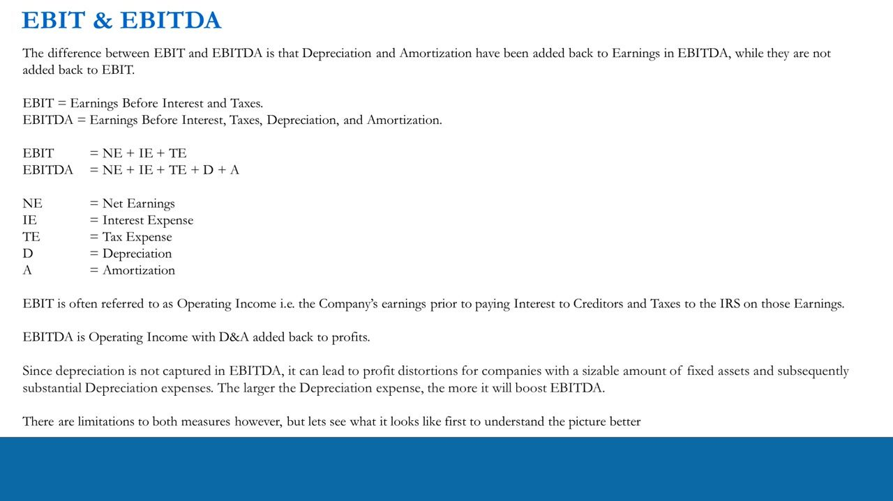
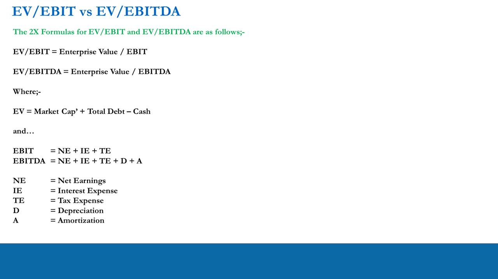
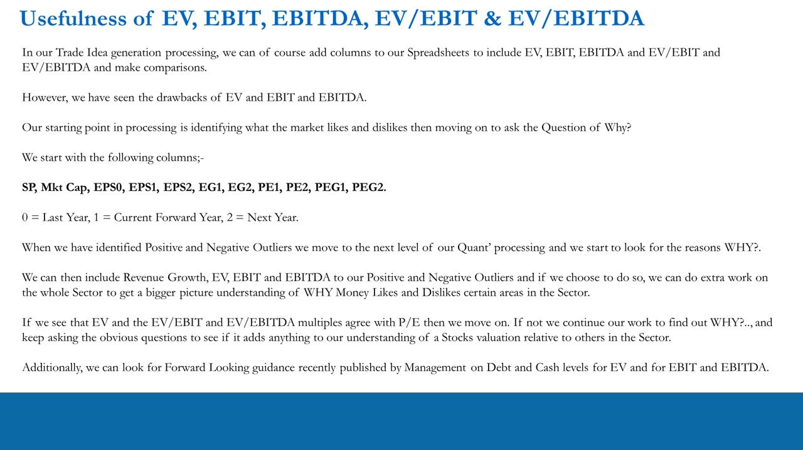

Trade Idea Generation – Quantitative Processing 3
The quant valuation block finishes: PEG re-read as 'the price the market pays for growth' (with the solve-for-P mechanic), then the backwards-looking multiples — Enterprise Value, EBIT & EBITDA, and EV/EBIT vs EV/EBITDA — layered onto the forward P/E screen as context, not verdicts.
PEG is not 'cheap below 1, expensive above 1' — it is the price the market pays for forecast growth, and you can solve it for the price that holds the ratio constant; EV/EBIT/EBITDA are useful backwards-looking context only if they add something incremental to your forward P/E.
The gist
- The full quant dashboard: FORWARD-looking filters (Mkt Cap, %Earnings Growth, %Revenue Growth, P/E, PEG) plus a set of BACKWARDS-looking measures added this lesson (Enterprise Value, EBIT & EBITDA, EV/EBIT, EV/EBITDA), then deeper P&L / balance-sheet / cash-flow ratios and company-specific qualitative KPIs.
- PEG = (Stock Price / Forward EPS) / Forward EPS % Growth — the price the market pays for forecast growth. Academic 'PEG below 1 = cheap, above 1 = expensive' is nonsense; like P/E there is no 'cheap' or 'expensive', and a PEG can stay constant while the stock rises and falls.
- Solve-for-P mechanic: Stock A (P $10, fwd EPS $1, P/E 10X, EG 20%, PEG 0.5); if guidance cuts forward EPS to $0.90, EG drops to 8% (($0.9-$0.8333)/$0.8333) and the price that keeps PEG 0.5 is P = 0.5 x 8% x $0.90 = $3.60. A healthy PEG that signals market endorsement is traditionally ~1-2.
- Enterprise Value = Market Cap + Total Debt − Cash — the theoretical takeover cost. Worked: $10bln Mkt Cap + $6bln debt − $1.7bln cash = $14.3bln. Four limitations: (1) doesn't show HOW the debt is used, (2) ignores operational quality, (3) the market already knows the debt/cash, (4) it's backwards-looking.
- EBIT = NE + IE + TE (= operating income); EBITDA = NE + IE + TE + D + A (D&A added back). EBIT suits capital-intensive sectors (O&G, Mining, Manufacturing, Infrastructure); EBITDA suits low-Capex sectors (a cash-flow proxy). Both hide that a firm can be operationally profitable yet lose money on a Net basis.
- EV/EBIT = EV / EBIT and EV/EBITDA = EV / EBITDA are backwards-looking context. The test: if they AGREE with the forward P/E, move on; if not, ask WHY. Screen columns start SP, Mkt Cap, EPS0/1/2, EG1/2, PE1/2, PEG1/2, adding Revenue Growth, EV, EBIT, EBITDA only for the outliers.
The full quant & qualitative dashboard
- Forward-looking sector filters: Market Capitalization (Mkt Cap), % Earnings Growth (EG), % Revenue Growth (RG), Price/Earnings Ratio (P/E), PEG Ratio.
- Backwards-looking measures added in this lesson: Enterprise Value (EV), EBIT & EBITDA, EV/EBIT, EV/EBITDA.
- Deeper backwards-looking metrics for later: P&L (Gross/Pre-tax/Net margins), Balance Sheet (Debt-to-Equity, Interest Coverage, Current, Quick, Working Capital/Total Assets, Book Value per Share), P&L+BS combos (Sales-to-Assets, Return on Assets, ROE), and Cash Flow (Free Cash Flow Yield).
- Qualitative KPIs (backwards and forwards looking): Key Performance Indicators unique to the company and the sector.
This is the map of the whole quant phase. Videos 22–23 covered the forward filters; this lesson finishes the top block by adding the backwards-looking valuation multiples, which are used as context around the forward P/E, never as standalone verdicts.

PEG re-read — the price the market pays for growth
- PEG is a valuation metric built on the standard P/E: Forward P/E ÷ Forward Earnings Growth, i.e. (Stock Price / Forward EPS) / Forward EPS % Growth, for the current year and the following year.
- Academic finance says PEG below 1 = 'cheap' (BUY) and above 1 = 'expensive' (SELL/SHORT) — 'total nonsense'; tear up the textbook.
- A PEG represents the price the market is willing to pay for a company's forecast EPS growth. As with P/E, there is no such thing as 'cheap' or 'expensive'.
- A PEG ratio may stay the SAME while the stock rises and falls — because both the price and the growth expectation move together.
The whole point is to stop reading a single PEG number as a buy/sell signal. It is a relationship between price and expected growth, so it only means something in context — and it can hold steady across very different prices.

Solving PEG for price — the Stock A worked example
- Stock A: Price $10, Forward EPS $1, P/E 10X, EPS Growth 20%, so PEG = (10/1)/20 = 0.5.
- Last year's EPS is this year's forward EPS discounted by the growth rate: $1 / 1.2 = $0.8333.
- If the company guides forward EPS DOWN to $0.90, the growth estimate falls from 20% to ($0.90 − $0.8333)/$0.8333 = 8%.
- Solve the PEG formula for the price that keeps PEG constant at 0.5: (P/$0.90)/8% = 0.5 → P = 0.5 x 8% x $0.90 = $3.60 (down from $10).
- A normal 'healthy' PEG that signifies market endorsement is traditionally around 1-2.
A cut to forward guidance hits BOTH the numerator (EPS) and the growth rate, so the price consistent with the same PEG can collapse dramatically. This is why PEG is a lens on how the market prices growth, not a static cheap/expensive label.

Relative PEGs across the Nonstore Retailers screen
- Same Nonstore Retailers (Retail Trade / NAICS) table from L22–23, now sorted on PEG F1, columns EPS FY0-FY3, EG F1/F2/F3, PE FY1/FY2/FY3, PEG F1/F2/F3; OSTK, W and SHOP highlighted.
- SHOP's PEG1 is a mess because EG F1 is −0.22%: a P/E of 287.63 divided by a near-zero growth number blows up (PEG F1 −1312.78). The market is looking past current-year earnings and focusing on revenue growth.
- If EG2 > EG1, PEG2 sits lower than PEG1 as it stands — see OSTK (PEG F1 9.23 → F2 0.57). Coming from negative EG1 to positive EG2 flips PEG from negative to positive — see SHOP and W.
- OSTK reference row: EG F1 7.26%, EG F2 64.66%, EG F3 30.53%; PE FY1 67.00, FY2 36.67, FY3 25.27; EPS FY1 1.33, FY2 2.19, FY3 2.86.
- Solving PEG constant for OSTK 2022 vs 2021: (P/$2.19)/64.66% = 0.57 → P = 9.23 x 64.66% x $2.19 = $1,307 versus a current ~$80 price — obviously ridiculous, so the market must be paying the premium for something else.
PEG breaks down whenever the earnings-growth denominator is near zero or crosses from negative to positive, which is exactly what happens to these recovery names. That breakage is itself the signal to go dig into revenue growth.

Revenue growth & the normalized-PEG target — OSTK
- OSTK income model (USD millions): Revenue 2,549.8 (2020) → 2,650.8 est 2021 → 3,064.8 est 2022; Revenue Growth 74.71% (2020), 3.96% (2021), 15.62% (2022) — the 15.62% forecast exceeds every pre-COVID year.
- 2020 revenue splits into Sales & Services Revenue 2,521.5 and Other Revenue 28.3; Operating Income (EBIT) swings −122.1 (2019) → +33.4 (2020) → 57.6 est → 103.2 est.
- R&D was 137.0mln in 2020, up a steady ladder from 71.8 (2013); the EPS 'kicker' from paring R&D: SHOP $4.84/$3.98 EPS0 = 1.22X (+122%), OSTK $3.34/$1.24 EPS0 = 2.69X (+269%).
- For OSTK 2022 to sit on a NORMALIZED PEG of 1: P = 1 x 64.66% x $2.19 = $141.60. Combined with the R&D-paring EPS kicker this points to upside potential — the market possibly thinks so too; the question is whether it is probable.
Setting PEG to a 'healthy' 1 turns the ratio into a price target ($141.60), and OSTK's above-trend 2022 revenue growth plus latent R&D upside is the thesis the premium might be pricing. It is a possibility to test, not a conclusion.

Enterprise Value — total value with a twist
- These next measures (EV, EBIT & EBITDA, EV/EBIT, EV/EBITDA) are all BACKWARDS-looking, taken from last year's publicly available accounts; use them to compare sector peers and contextualize positive and negative outliers.
- Market Capitalization = Live Share Price × Outstanding Shares in Issue.
- Enterprise Value = Market Cap + Total Debt − Cash — the theoretical cost of taking the company over.
- Worked example: Market Cap $10bln, Total Debt $6bln, Cash $1.7bln → EV = $10bln + $6bln − $1.7bln = $14.3bln. An acquirer pays off the debt but can use the cash toward it, so the total is $14.3bln for the equity, debt and cash.

The four limitations of EV
- 1. How is the debt being used? EV doesn't say. Debt funding highly profitable operations shows up in the (forward-looking) Market Cap, so more debt / less cash is not automatically a bad stock.
- 2. The quality of operations. Comparing one stock's EV to another's may add nothing beyond Mkt Cap unless done within the context of operational quality — which arrives later as qualitative analysis & KPIs.
- 3. The market already knows the debt and cash. Market Cap is what the collective market pays given ALL available information, including debt, cash and operational quality (this is NOT an EMH claim — but the market plainly knows a company's last published accounts).
- 4. It's backwards-looking — hence forward-looking measures matter more, being a function of the last accounts PLUS forward expectations of the business.

EBIT & EBITDA — definitions and distortions
- EBIT = Earnings Before Interest and Taxes = NE + IE + TE (Net Earnings + Interest Expense + Tax Expense); often called Operating Income — earnings before paying interest to creditors and taxes to the IRS.
- EBITDA = Earnings Before Interest, Taxes, Depreciation and Amortization = NE + IE + TE + D + A; i.e. operating income with D&A added back to profits.
- Because depreciation is excluded, EBITDA can distort profit for firms with large fixed assets: the bigger the depreciation expense, the more it boosts EBITDA.
- Key limitation: a company can be operationally profitable (EBIT/EBITDA positive) yet lose money on a NET basis — interest, taxes, depreciation and amortization are real. You can keep adding things back (even R&D, as with SHOP and OSTK) until you're back to just Revenue, which isn't useful.
The usefulness of EBIT vs EBITDA depends on the sector. EBIT is the better operational gauge for capital-intensive industries (O&G, Mining, Manufacturing, Infrastructure); EBITDA suits low-Capex industries as a cash-flow proxy. Compare same-sector peers to see who has excelled or struggled operationally, then ask WHY (qualitative).

EV/EBIT vs EV/EBITDA — does it add anything?
- EV/EBIT = Enterprise Value / EBIT; EV/EBITDA = Enterprise Value / EBITDA, where EV = Mkt Cap + Total Debt − Cash and EBIT = NE+IE+TE, EBITDA = NE+IE+TE+D+A.
- The valid counter-argument: Market Cap already reflects the EV and EBIT figures, because price is the market and the market is forward-looking. Reported data is real and tangible, but traders trade on expectation and edge.
- The real question: does EV/EBIT or EV/EBITDA add anything INCREMENTAL to the forward P/E? EV/EBITDA carries more reservations — it simply adds D&A back to EBIT for a higher profit number.
- In a capital-intensive business (e.g. Mining) EV includes debt on the top line while EBITDA excludes D&A on the bottom line — yet that debt probably bought the equipment that creates the D&A. The market already knows the mines and Capex exist. So EV/EBIT suits capital-intensive sectors, EV/EBITDA low-Capex ones, both inheriting EV's limitations vs Market Cap.

Putting it to work — start simple, ask WHY
- Start the screen with columns SP, Mkt Cap, EPS0, EPS1, EPS2, EG1, EG2, PE1, PE2, PEG1, PEG2 (0 = last year, 1 = current forward year, 2 = next year).
- Identify positive and negative outliers first, then move to the next level and look for the reasons WHY.
- Only then add Revenue Growth, EV, EBIT and EBITDA to those outliers (and optionally the whole sector) to build a bigger picture of why money likes or dislikes areas of the sector.
- The test: if EV and the EV/EBIT & EV/EBITDA multiples AGREE with the P/E, move on; if not, keep working and asking the obvious questions to see whether they add anything to the stock's valuation relative to peers.
- You can also fold in recently published management forward guidance on debt and cash (for EV) and on EBIT/EBITDA.
The multiples never lead the process — the forward P/E outlier scan does. The backwards-looking measures are only worth adding when they either confirm or contradict what the forward numbers already say.

Glossary
- PEG Ratio(Stock Price / Forward EPS) / Forward EPS % Growth = Forward P/E ÷ forward earnings growth. The price the market pays for forecast growth, not a 'cheap below 1 / expensive above 1' signal. A PEG can stay constant while the stock rises and falls; a healthy, endorsing PEG is traditionally ~1-2. Blows up when the growth denominator is near zero (SHOP PEG F1 −1312.78 off EG F1 −0.22%) or flips sign as growth crosses from negative to positive.
- Solve-for-P (PEG)Rearranging PEG = (P/EPS)/Growth to P = PEG × Growth × EPS to find the price that holds the ratio constant. Stock A: guidance cuts forward EPS to $0.90, growth to 8%, so P = 0.5 × 8% × $0.90 = $3.60 (from $10). For OSTK on a normalized PEG of 1 in 2022: P = 1 × 64.66% × $2.19 = $141.60.
- Enterprise Value (EV)Market Cap + Total Debt − Cash — the theoretical takeover cost of the whole company (equity + debt, less usable cash). Example: $10bln + $6bln − $1.7bln = $14.3bln. Backwards-looking; four limitations: doesn't show how debt is used, ignores operational quality, the market already knows the debt/cash, and it's historical.
- EBITEarnings Before Interest and Taxes = NE + IE + TE (Net Earnings + Interest Expense + Tax Expense). Also called Operating Income — profit before paying interest to creditors and taxes. More useful in capital-intensive sectors (O&G, Mining, Manufacturing, Infrastructure).
- EBITDAEarnings Before Interest, Taxes, Depreciation and Amortization = NE + IE + TE + D + A — operating income with D&A added back. More useful in low-Capex industries as a cash-flow proxy; excluding depreciation distorts profit for firms with large fixed assets (bigger depreciation boosts EBITDA more).
- EV/EBIT & EV/EBITDAEV / EBIT and EV / EBITDA — backwards-looking valuation multiples. EV/EBIT suits capital-intensive sectors, EV/EBITDA low-Capex ones; both inherit EV's limitations vs Market Cap. The trader's test is whether they add anything INCREMENTAL to the forward P/E: if they agree with P/E, move on; if not, ask WHY.
- Operationally profitable vs Net lossEBIT/EBITDA can be positive while the company still loses money on a Net basis, because interest, taxes, depreciation and amortization are real costs. Adding items back (even R&D) can be taken all the way to Revenue, which is meaningless — so EBIT/EBITDA must be read with that caveat.